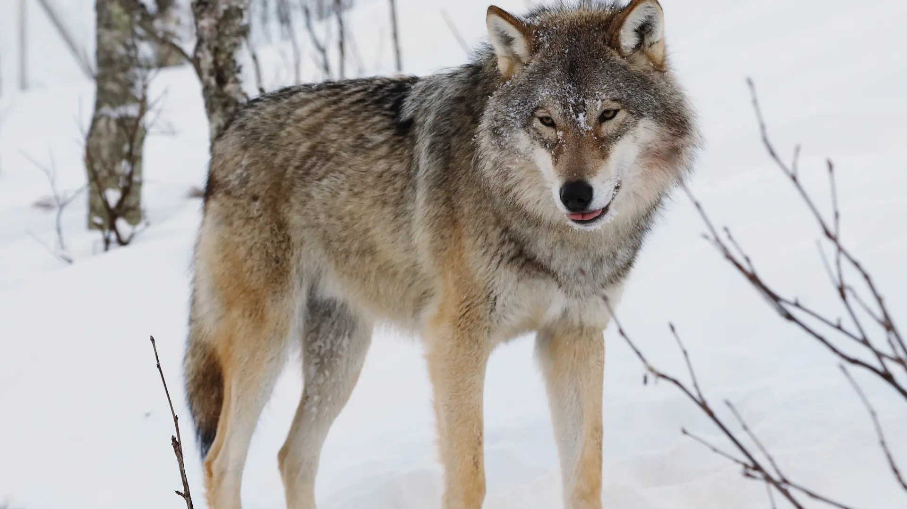
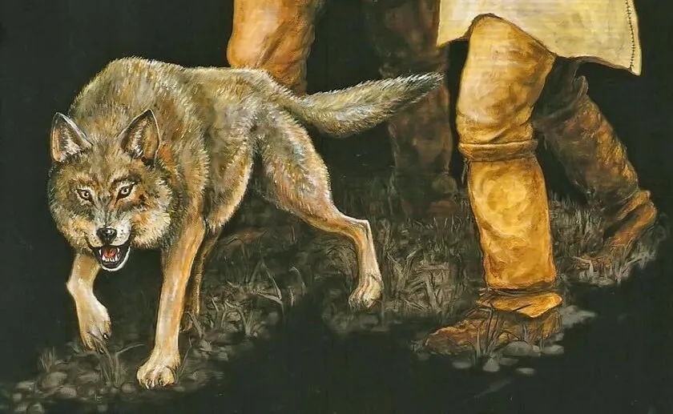
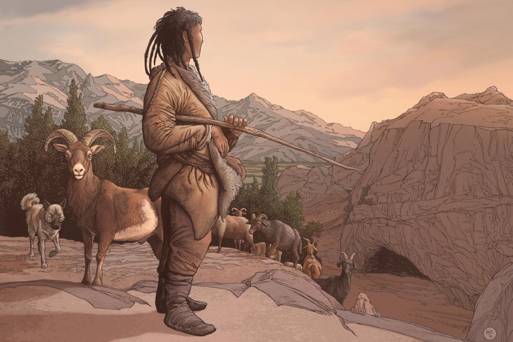
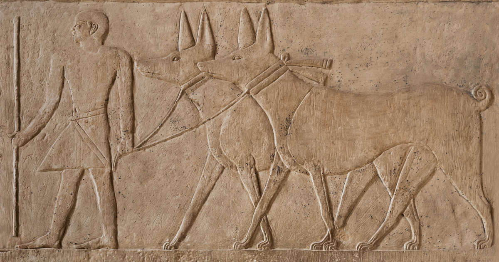
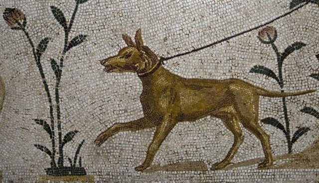
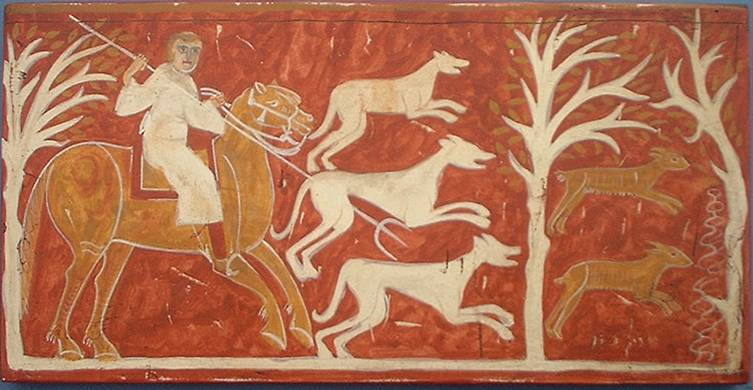
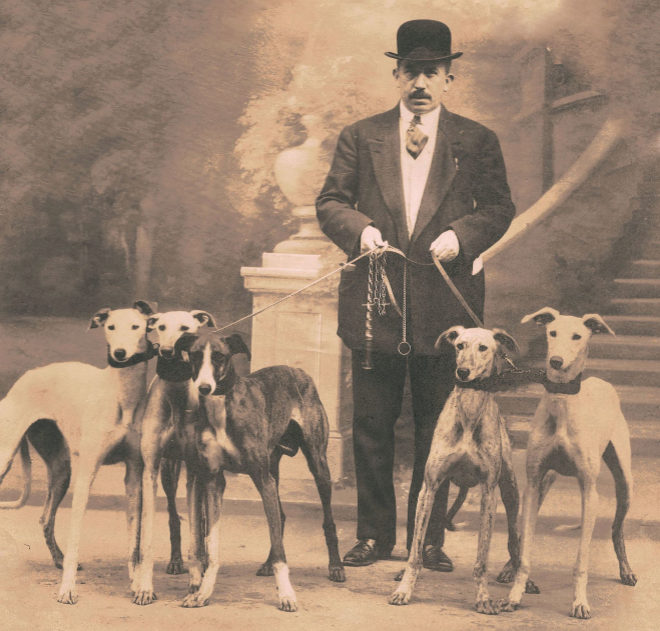
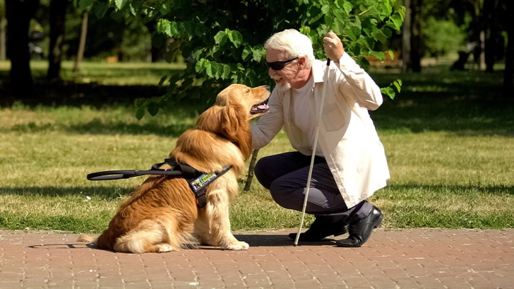

Paws & Claws
El perro es un animal que lleva miles de años con nosotros y aunque ahora podemos encontrar perros de tamaños y formas muy diferentes, todos pertenecen a la misma especie. La domesticación del perro comenzó hace miles de años.
Descubre cómo los lobos se convirtieron en nuestros mejores amigos a lo largo de la historia.
Se cree que los lobos comenzaron a acercarse a los asentamientos humanos en busca de comida. Los humanos empezaron a domesticarlos.

Aparecen las primeras pruebas arqueológicas de perros domesticados en sitios de cazadores-recolectores.

En la Revolución Neolítica, los perros se vuelven fundamentales para la caza, la protección y la compañía.

En Egipto y Mesopotamia, los perros son representados en arte y utilizados para la caza y la guerra.

En Grecia y Roma, los perros cumplen roles como guardianes, pastores y compañeros de la nobleza.

Se populariza la cría selectiva en Europa, dando origen a diferentes razas con propósitos específicos.

Se establecen los primeros estándares de razas y clubes caninos como el Kennel Club (1873).

Los perros se convierten en mascotas esenciales en millones de hogares y se entrenan para servicios como terapia, rescate y policía.

Desde ser lobos salvajes hasta los compañeros fieles de hoy, los perros han recorrido un largo camino junto a la humanidad.